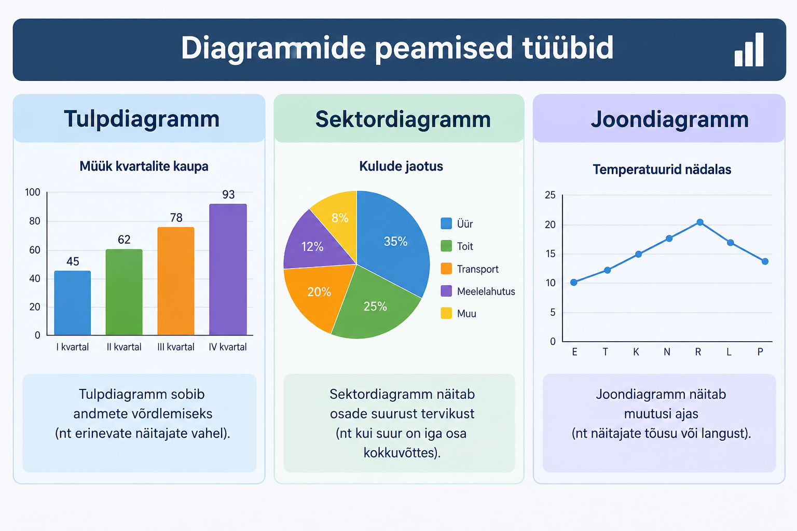

Kodu
Map area kasutamine

Peamised diagrammitüübid on tulpdiagramm, sektordiagramm ja joondiagramm. Tulpdiagramm sobib andmete võrdlemiseks, sektordiagramm näitab osade suurust ning joondiagramm näitab muutusi ajas.